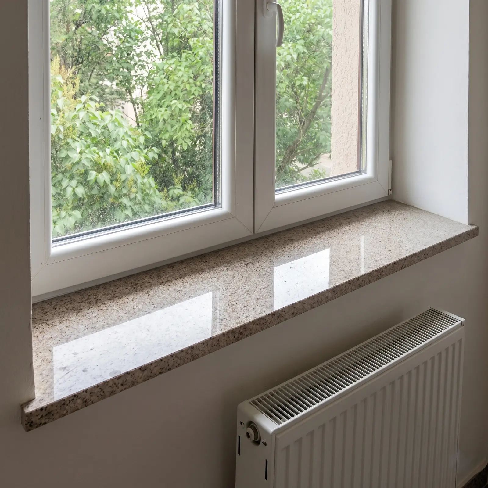
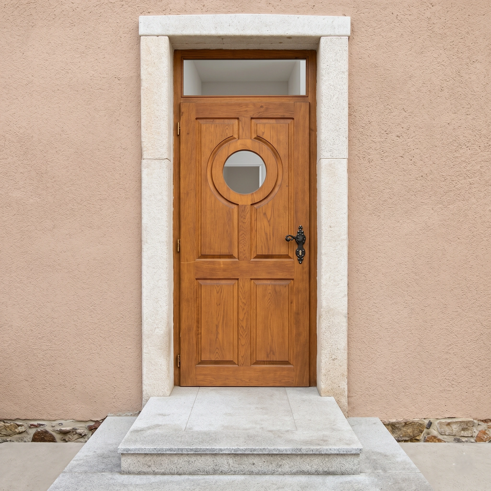
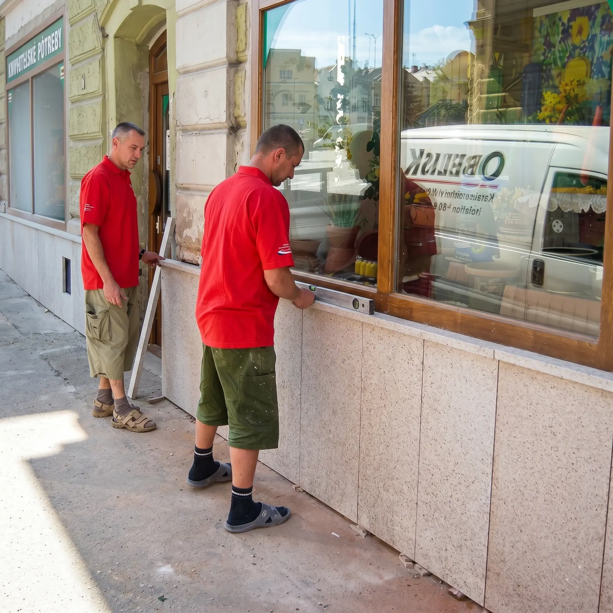

Zabýváme se stavební výrobou s důrazem na precizní práci s kamennými materiály. Schody, dlažby, parapety, krbové obložení, sokly a další prvky s extrémní životností.
Z dostupných materiálů používáme nejčastěji žulu pro její unikátní estetický vzhled, dlouhou životnost a snadnou údržbu. Žula je dražší než různé náhražky, ale cenu kompenzují jedinečné užitné vlastnosti a odolnost - žulové stavební prvky jsou prakticky nerozbitné.
Vždy se snažíme zákazníkům vyjít vstříc, i když občas musíme usměrnit nadpozemská přání a poradit optimálnější řešení. Rovněž zajišťujeme renovaci časem zašlých kamenných prvků.
Žulové desky se používají v interiéru koupelen - při zapuštění umyvadel působí velmi pěkně. Žula se výborně hodí i na okenní parapety a určitě přežije všechny majitele domu. Za tuto celoživotní službu požaduje žula jen občas otřít od prachu.


Na zakázku vyrábíme a montujeme nejrůznější prvky. Ceny uvádíme bez DPH kvůli odlišné sazbě (zvýhodněná pro rodinné domy, základní u podnikatelských objektů). Mezi typické kamenné prvky patří:
2.500 Kč / m²
Spodní části domů. Včetně vrchního obložení sloupků u zděných plotů.
od 1.700 Kč / bm
Žulové nášlapy schodů (chodnice) a podstupnice. Uvedená cena je za běžný metr.
od 900 Kč / m²
Leštěná či pálená dlažba do interiéru i exteriéru, oblíbené rozměry 40x40 cm.
1.000 Kč / m²
Žulové a teracové parapety. Uvedená cena je pro leštěnou žulu o síle 3 cm.
od 7.000 Kč / m²
Cena v závislosti na složitosti prací. Luxusní prvek dominující interiéru.
Individuální cena
Kamenné žulové desky na kuchyňské linky nebo pro zapuštění umyvadel do koupelen.
Inspirujte se našimi návrhy a zpracováním stavebních prvků v reálném prostředí.
